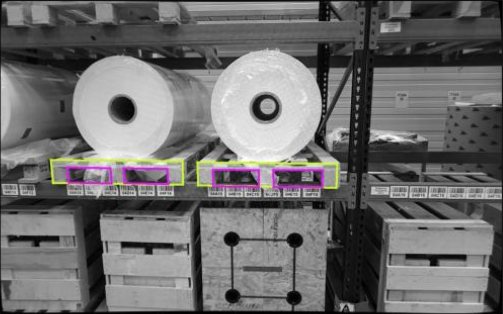
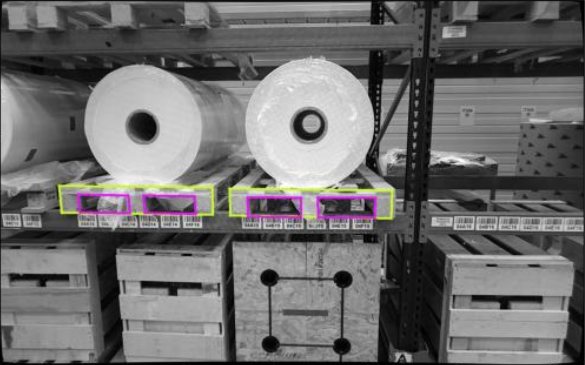

Wiktor Ligęza
6-DoF Pallete Detection
Main Architect of 6DoF Pallet Detection Pipeline
- Designed and executed the full pipeline from input to output
- Selected AI models and designed input/output architecture
- Developed end-to-end pipeline in Python for a working proof-of-concept
- Reimplemented in C++ for performance optimization
- Leveraged CUDA for GPU acceleration
- Created intuitive GUI for real-time detection visualization
- Implemented user controls for parameter tuning and system calibration
 

Bin Picking
Main Solution Architect – Bin Picking
- Designed the end-to-end 6DoF object localization solution
- Architected the full workflow for 6DoF object localization
- Designed a 3D camera rig to capture high-quality point clouds
- Developed an artificial data generation pipeline using Unity 3D

GPS-controlled system for broadcast spreaders and self-propelled sprayers
Full-stack Developer
- App design and user interface development
- Logic implementation for precision agriculture systems
- Tightly working with clients on testing and requirements
- Field work with agricultural machinery for system integration
- Full-stack app development for GPS control systems
.jpeg)
.jpeg)
.jpeg)
.jpeg)
.jpeg)
GPS-controlled system for seeder with planner and mission control
Full-stack Developer
- User interface development
- Logic implementation for precision agriculture systems
- Tightly working with clients on testing and requirements
- Field work with agricultural machinery for system integration
- Full-stack app development for GPS control systems


Other Projects
Additional Research & Development Projects
- Eye and Gaze Tracker - Computer vision system for tracking eye movements
- Alzheimer's Disease Detection - R&D project using machine learning for early detection
- Audio and Image Analysis - Multi-modal data processing and analysis
- Machine Learning Algorithms for Optimization - Custom ML solutions
- Unity for Data Augmentation - Synthetic data generation pipelines
- Scripts for Game Development - Interactive application development
- RehabOn - Rehabilitation technology solutions
- VR-based System for Strabismus Treatment - Medical VR applications
- People Tracking System - Computer vision for human detection
- B.Sc. Engineering Thesis (IoT) - Internet of Things system development